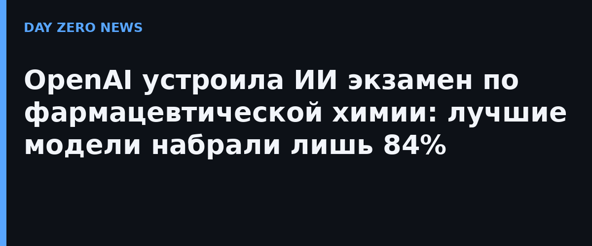

OpenAI 20 ноября представила MedChemBench — набор из 99 задач, собранных из 117 научных статей и патентов и охватывающий 761 различную молекулярную структуру. Идея простая и жёсткая: модели дают контекст реального исследовательского проекта — биологическую мишень, цели химиков, уже изученные соединения и часть экспериментальных результатов — и просят продолжить работу. Оцениваются четыре умения: правильно восстановить молекулярную структуру, научно объяснить выбор соединения на основе данных, корректно ранжировать и отобрать соединения, и предсказать числовые свойства молекул.
На максимальном уровне рассуждений (xhigh) лучший результат — 84,5% доступных баллов — показала GPT-6.2 Astra: GPT-6 Astra набрала 83,3%, GPT-6.1 Sol — 82,0%, а GPT-5.6 Sol — лишь 58,2%. При этом успехи крайне неровные: структуры молекул лидеры собирают почти без ошибок (более 95% баллов), зато выбор соединений и предсказание числовых свойств у всех моделей еле дотягивают примерно до половины. В одной из задач нужно было собрать молекул с 18-атомным циклом — GPT-6 Astra решала её 10 раз из 10, а часть более старых моделей провалила все попытки, собирая цикл из 15 атомов или разрывая молекул на два несвязанных фрагмента.
Ключевая ловушка medicinal chemistry — компромисс свойств: усиление одного параметра часто ухудшает другой. В одной из задач модель по ранним экспериментам должна была предсказать, как три соединения будут блокировать белок PRMT5 (мишень онкологического поиска), проникать через клеточную мембрану и разрушаться печёночными ферментами. Реальные, скрытые от модели эксперименты показали развилку: соединение 23 сильнее блокировало мишень, а соединение 24 лучше проходило в клетку и медленнее распадалось. Предсказать всё это одновременно — та задача, где ИИ пока спотыкается.
Лаборатория подчёркивает: бенчмарк не доказывает, что модели способны открывать новые лекарства или улучшать решения в лаборатории. Не исключено, что некоторые тестовые работы модели уже встречали в обучающих данных, а каждый ответ — попытка без инструментов, обратной связи и новых экспериментов. Тем не менее тест usefulness уже сейчас: он показывает, где ИИ-ассистент химика действительно силён (структуры и объяснения), а где ему пока нужен человек.